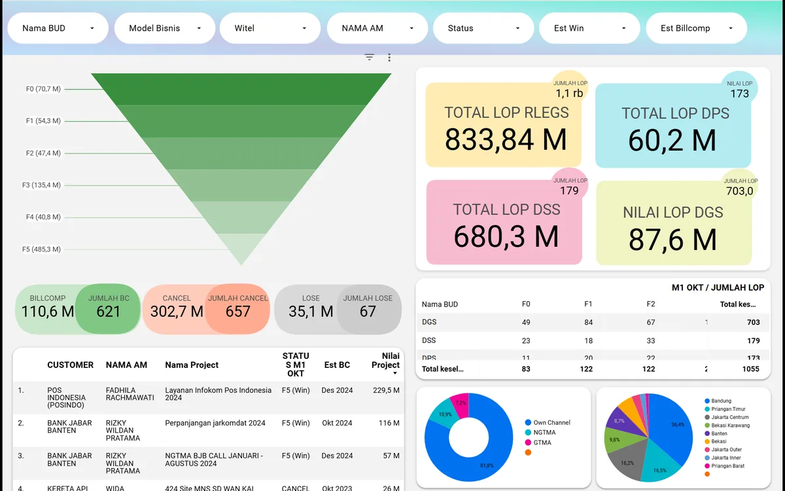
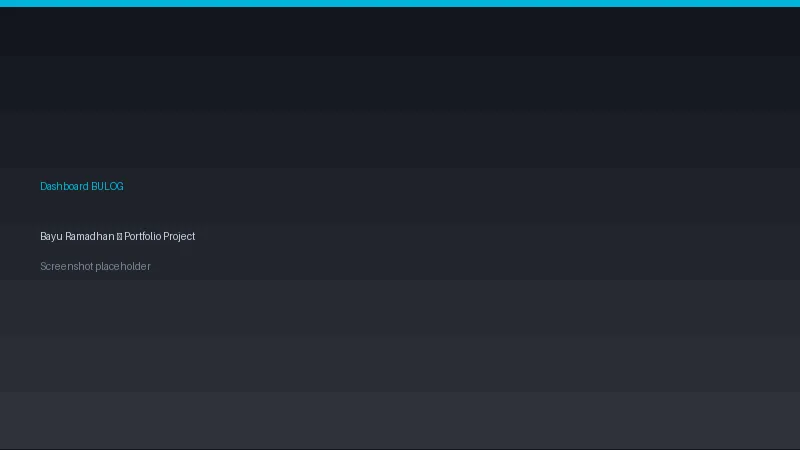
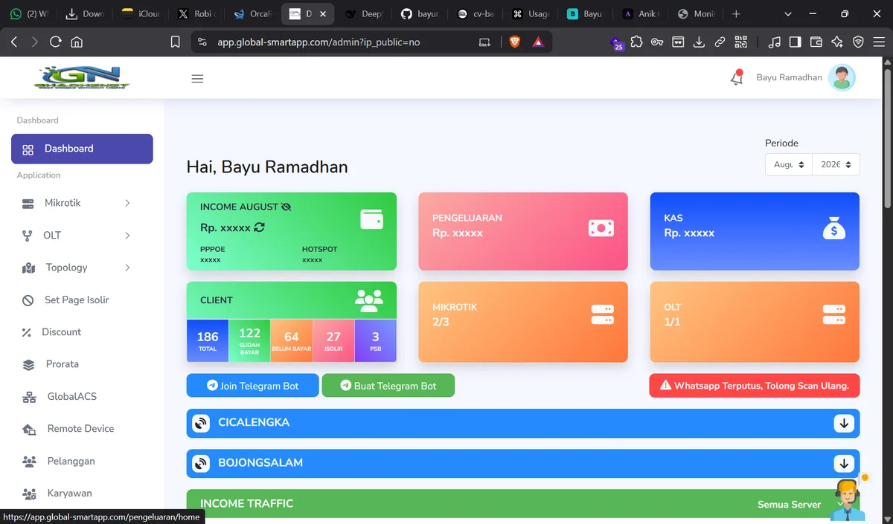
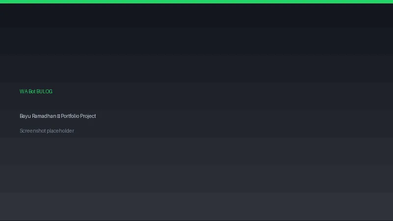
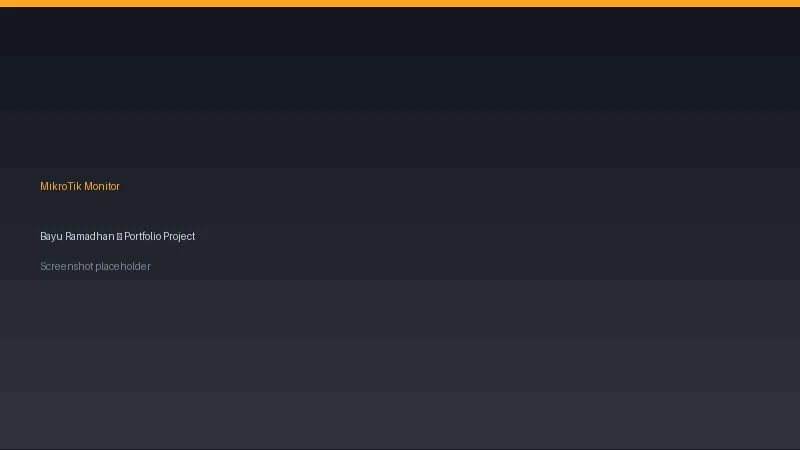

B2B Process Intelligence Dashboard
End-to-end AO–RO order lifecycle monitoring — visibility up 70%, backlog down 35% (Q3 2024).
Looker Studio • Oracle SQL • Apps Script
View case study →Data & BI Analyst · Network & AI Infrastructure Engineer
Data & Business Intelligence Analyst with 3+ years of experience at Telkom Group (SQL, Looker Studio, Apps Script) and Network & AI Infrastructure Engineer — ISP founder (MikroTik, PPPoE, FTTH) building AI chatbots (Telegram/WhatsApp), 24/7 automated monitoring, and multi-profile AI agent orchestration with provider failover & plugin hooks.
Currently working on
B2B Process Intelligence
// 01. ABOUT ME
I'm a Data & Business Intelligence Analyst with 3+ years of experience at Telkom Group, focused on turning complex operational data (AO, SO, DO, MO, RO) into actionable business insights.
Proven in KPI monitoring, revenue assurance, and process automation using SQL, Looker Studio, and Google Apps Script — cutting manual reporting effort by ~60% and accelerating Billing Complete by 25%. I'm also a local ISP founder with end-to-end network operations and customer analytics experience.
As a Network & AI Infrastructure Engineer, I operate MikroTik infrastructure (64+ PPPoE users, 200 Mbps, dual-site), connected via Cloudflare Tunnel & Tailscale, and build multi-profile AI agent orchestration (Hermes) — Telegram & WhatsApp bots with knowledge bases, Google Sheets integration, rate limiting, and deterministic plugin hooks.
Outside of work, I enjoy automation, designing knowledge bases, and connecting data, networks, and AI to support data-driven decisions.
3+
Years Experience
200
ISP Customers
200+
Orders Monitored
25%
BC Cycle Faster
Languages
// 02. EDUCATION & CERTIFICATION
2017 — 2022
STMIK Indonesia Mandiri, Bandung
Bachelor of Computer Engineering. GPA 3.57 / 4.00. Focus on programming, databases, and information systems fundamentals.
Certifications
// 03. SKILLS
// 04. PROJECTS

End-to-end AO–RO order lifecycle monitoring — visibility up 70%, backlog down 35% (Q3 2024).
Looker Studio • Oracle SQL • Apps Script
View case study →
Real-time procurement monitoring for BULOG Kancab Ciamis (4,500+ GKP rows) — reporting turnaround cut from days to minutes.
Laravel • Chart.js • Google Sheets API
View case study →
Complete ISP billing suite — customer management, voucher hotspot, PPPoE, real-time monitoring, and financial reports, integrated with MikroTik RouterOS API.
Laravel 11 • Tailwind • MySQL • Redis • MikroTik API
View case study →
AI WhatsApp bot for the BULOG PBP program — 41+ FAQ knowledge base, media auto-replies, and scheduled broadcasts on Hermes agent orchestration.
WhatsApp API • Hermes Agent • Knowledge Base • Cron
View case study →
24/7 automated monitoring across 2 ISP locations (200+ PPPoE clients) — Telegram alerts, GPON OLT diagnostics, and QoS classification for faster incident response.
MikroTik API • Telegram Bot • GPON/OLT • FastTrack
View case study →// 05. EXPERIENCE
PT Telkom Indonesia (Telkom Group) — RLEGS REG 2
Full-time, Bandung. B2B reporting automation, Looker Studio dashboards, revenue variance analysis, and cross-team coordination.
PT Telkom Indonesia
Full-time, Bandung. Connectivity and sales data analytics, automation bots, and regional performance dashboards.
PT Telkom Indonesia
Special assignment. Training & onboarding for the Pijar Sekolah e-learning platform across 65 schools in West Java.
PT Ghadhe Akses Mandiri
Business owner. Built & managed a local ISP serving 200 residential and SME customers in Bandung.
AI Agent Orchestration & Network Automation
Designed & operated network infrastructure plus multi-profile AI agent orchestration (Hermes) on a 24/7 Fedora server — Telegram & WhatsApp service bots with knowledge bases, rate limiting, and automated reporting.
// 06. CONTACT
Open to job opportunities, data/BI and automation projects, or collaborations — let's talk about data-driven decisions & technology.